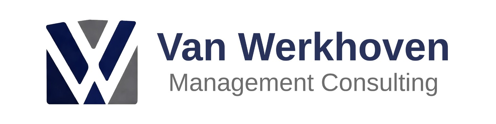

Projectmanagement
Regie op realisatie, planning, risico’s, kosten, kwaliteit en samenwerking.

OVER MIJ
Ik ben Johan van Werkhoven, zelfstandig projectmanager en management consultant. Sinds 2011 werk ik in infrastructuur en telecom, zowel aan de kant van de aannemer als van de opdrachtgever.
Ik combineer projectregie met businessanalyse, financiële beheersing en procesverbetering. Daardoor kijk ik naar een vraagstuk vanuit de uitvoering, de processen, de cijfers én de mensen die ermee werken.
Mijn kracht zit in het vinden van de oorzaak achter afwijkingen, en die vertalen naar heldere afspraken, werkbare processen en concrete verbeteringen. Ik blijf betrokken tot de verbetering in de praktijk werkt en geborgd is, niet alleen tot het advies op papier staat.
Regie op realisatie, planning, risico’s, kosten, kwaliteit en samenwerking.
Opdrachtgevers, aannemers, gemeenten en ketenpartners verbinden rond een gezamenlijk resultaat.
Grip op projectresultaat, meerwerk en afwijkingen, met onderbouwde standpunten voor besluitvorming.
Processen, data en afwijkingen analyseren en vertalen naar besluiten en verbeteringen.
Lean Six Sigma, oorzaakanalyse en procesontwerp, tot en met implementatie en borging.
Nieuwe processen, systemen en werkwijzen praktisch toepasbaar maken in de operatie.
Financiële beheersing · KPN
Binnen lopende FttH-projecten beoordeel ik meerwerk en financiële afwijkingen. Door projectinformatie, gemaakte afspraken en de praktijk van de uitvoering naast elkaar te leggen, onderbouw ik standpunten voor besluitvorming en afrekening.
Businesscase & procesontwerp · voor KPN
Businesscase en end-to-end werkproces voor voorbereiding en oplevering van glasvezel-na-aansluitingen. Processtappen, capaciteit, systemen, doorlooptijden, kwaliteitscontroles en overdrachtsmomenten in kaart gebracht en vertaald naar een uitvoerbare procesinrichting.
Automatisering · eigen praktijk
Een Excel/VBA-oplossing die klantgegevens automatisch omzet in conceptmails in Outlook. De eerste toepassing bespaarde circa drie werkdagen per kwartaal en haalde repeterend, foutgevoelig werk weg.
Implementatie & AI · VolkerWessels Telecom
Een voice-first conversational AI-pilot voor de klantenservice uitgewerkt en geïmplementeerd. Daarnaast key user planning bij de invoering van 4PS Construct en bijgedragen aan de professionalisering van een servicecontract.
Mijn volledige cv stuur ik je graag toe. Vraag het aan.
Ik denk graag met je mee, vrijblijvend en praktisch.
Plan een kennismaking ↗